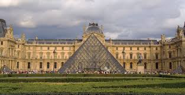
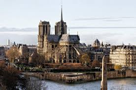

Eiffel Tower

The Eiffel Tower is one of the most iconic landmarks in the world. Standing at 330 meters, it offers a breathtaking view of Paris from the top.
Louvre Museum
Home to thousands of works of art, including the Mona Lisa, the Louvre is the most visited museum in the world.
Notre-Dame Cathedral
This historic cathedral is a masterpiece of French Gothic architecture. Although damaged by fire in 2019, it's still a must-see.
Travel Tips
- Best time to visit: April to June and September to November
- Use the metro for quick and cheap transport
- Learn a few basic French phrases
- Book tickets online in advance for popular attractions
Contact Us
If you have any questions or need assistance, feel free to reach out!